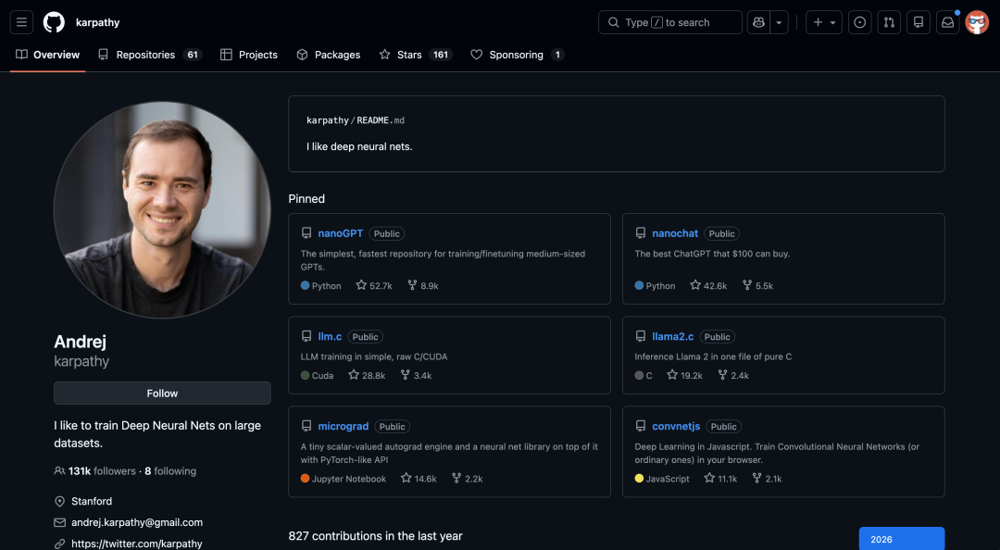
01
它的开源项目
nanoGPT 是 Karpathy 为了教学和研究而开发的最简约、最清晰的 GPT 训练库。
它被公认为理解大语言模型原理的入门神作。
它剥离掉工业级代码中繁杂的工程包装，只保留 Transformer 架构最核心的逻辑。
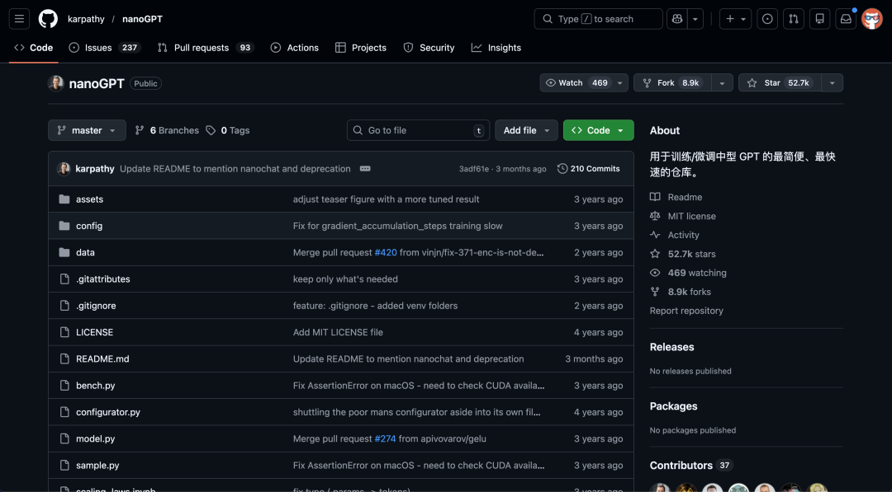
通过这个项目，开发者可以清晰地看到一个类似 GPT-2 的模型是如何从零开始，通过 PyTorch 编写并在自己的数据上进行预训练的。
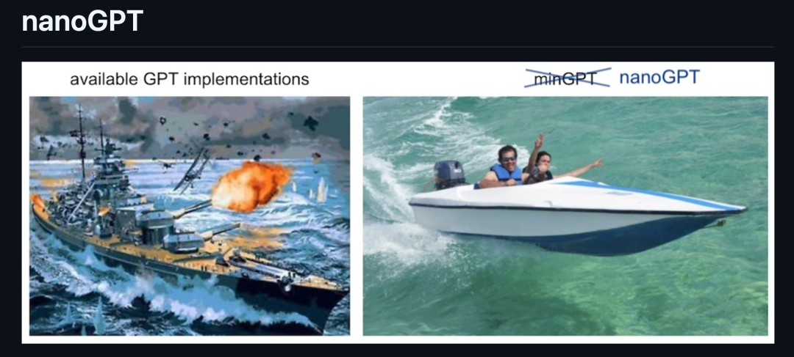
它的核心代码极其精炼，主要由两个约 300 行的文件组成：model.py 定义了复杂的 Transformer 数学结构，而 train.py 则实现了完整的训练循环。
尽管代码量极小，但它完整支持了现代深度学习的关键技术，如分布式训练、混合精度加速（Flash Attention）以及与 OpenAI 官方权重的兼容。
开源地址：https://github.com/karpathy/nanoGPT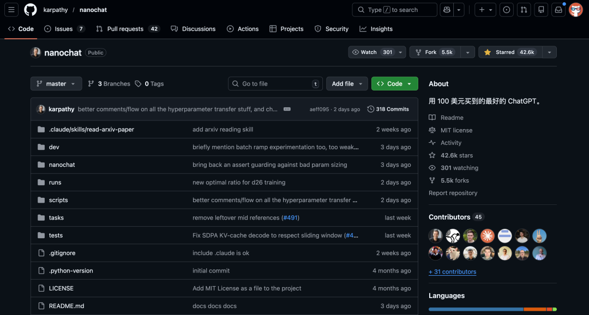
如果说 nanoGPT 关注的是预训练，让模型学会预测下一个字，那么 nanochat 则是进阶版的全栈式大模型训练框架。
它不仅涵盖了预训练，还补齐了将原始模型转化为类似 ChatGPT 的对话模型所需的完整链路，包括：分词器训练、有监督微调和强化学习。
这个项目只用约 8000 行代码实现了一个端到端的系统，还自带了一个现 Web 聊天界面，让用户在训练结束后能立刻与自己的模型对话。
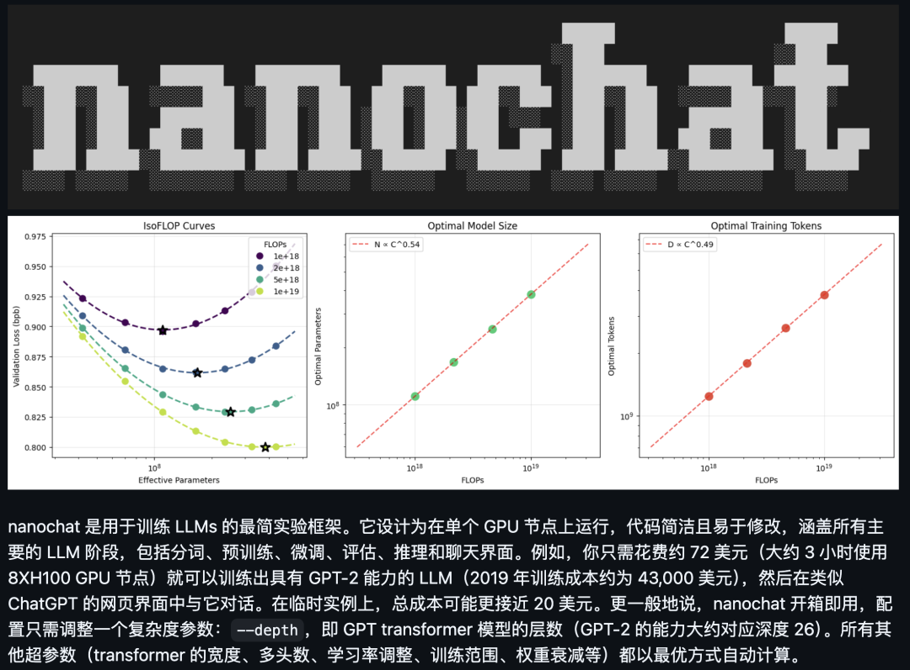
02
大神的信息源
最近 Andrej Karpathy 在自己的 X 上发了一个帖子，它认为目前的社交媒体充斥着为了诱导点击和情绪而生成的 AI 垃圾内容。
为了获取高质量、长篇且具有深度思考的内容，他强烈建议回归 RSS 订阅。
它觉得 RSS 是对抗信息茧房和算法操控的最后堡垒。
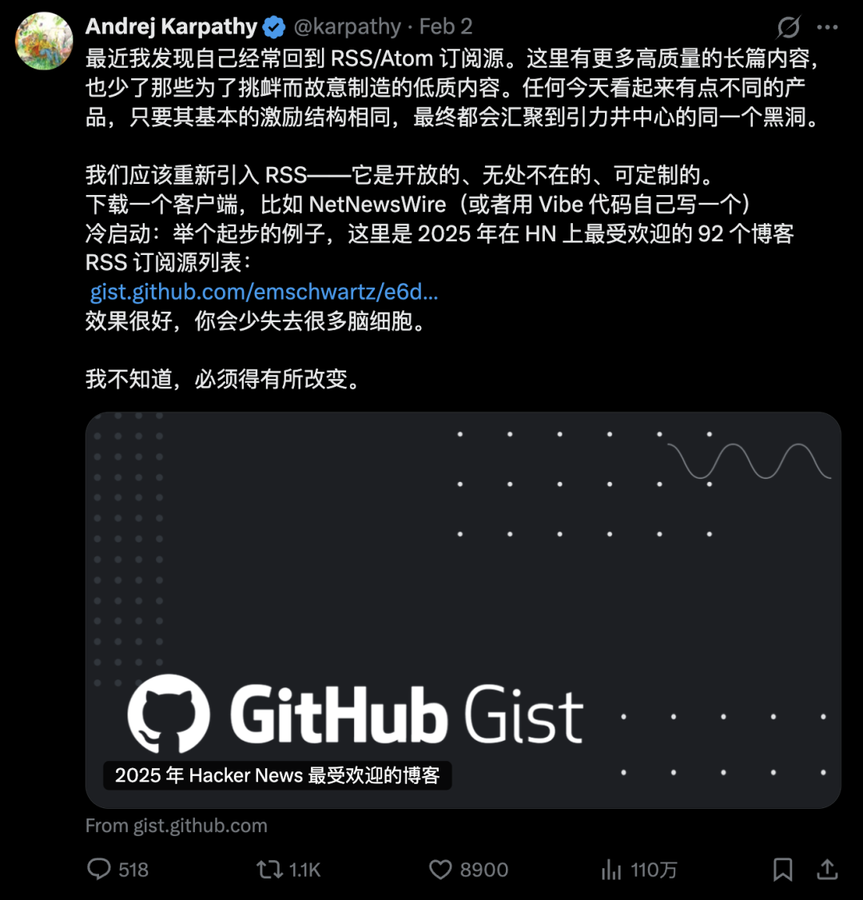
地址：https://gist.github.com/emschwartz/e6d2bf860ccc367fe37ff953ba6de66b#file-hn-popular-blogs-2025-opmlHacker News 是 YC 运营的新闻聚合网站。
它在科技界、程序员圈子和创业圈子中拥有极高的地位，被许多人视为获取高质量科技资讯和进行深度讨论的圣地。
03
如何像 Karpathy 一样获取信息？
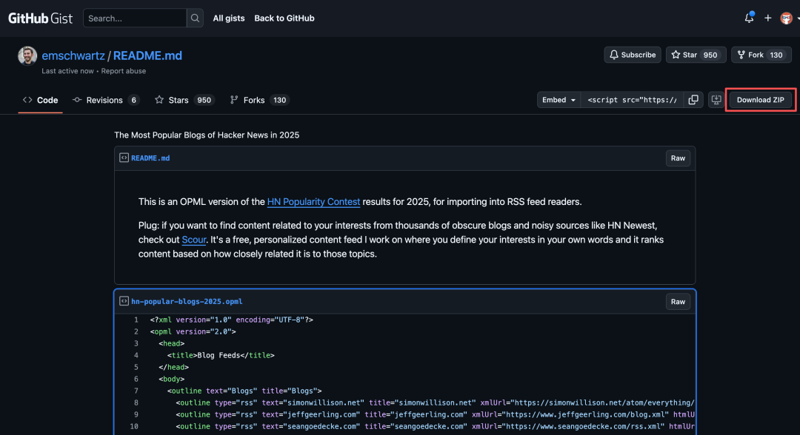
开源地址：https://github.com/RSSNext/Folo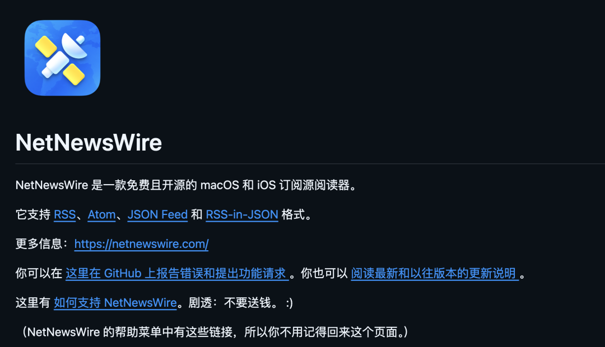
开源地址：https://github.com/Ranchero-Software/NetNewsWire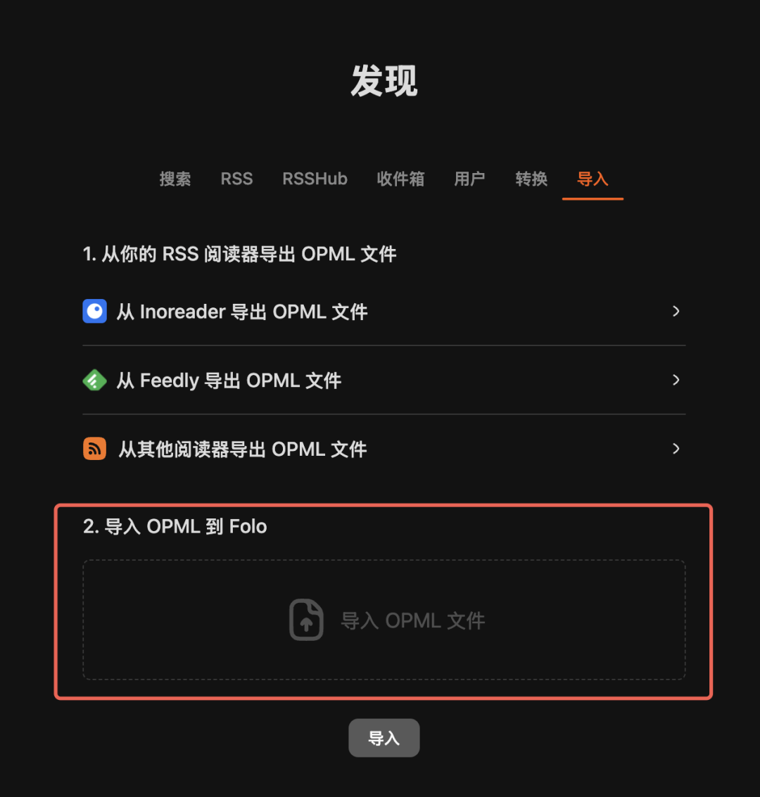
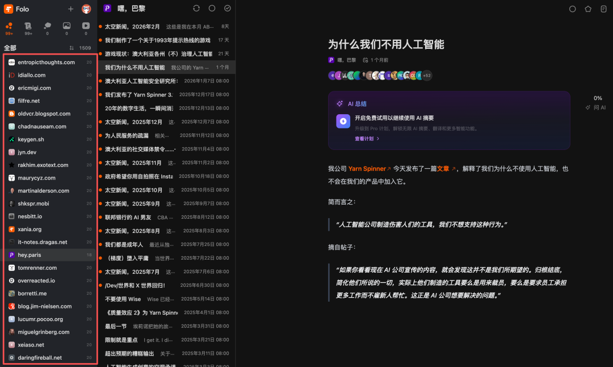
04
这个信息源有啥
不同于炒作概念的人，他会手写代码测试各种新模型，分享详细的 Prompt 工程技巧、API 使用心得以及安全漏洞。
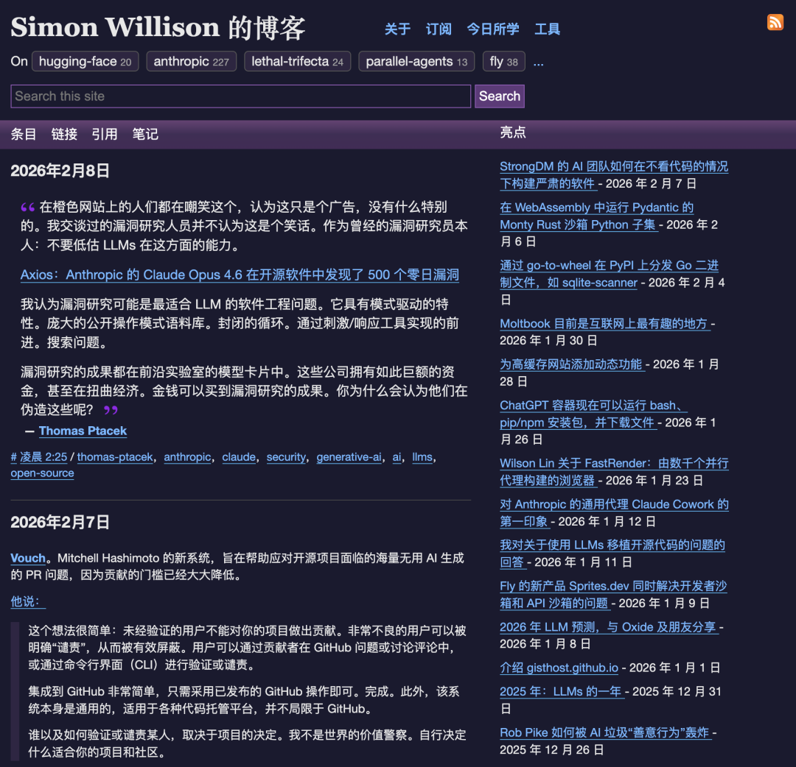
还有 Neal Agarwal，他不做枯燥的技术分享，而是做好玩的网页。
他的代表作《Stimulation Clicker》刺激点击器是对现代互联网多巴胺成瘾的讽刺游戏。
他的作品经常霸榜 Hacker News，代码不仅可以用来创造工具，也可以用来创造快乐和艺术。
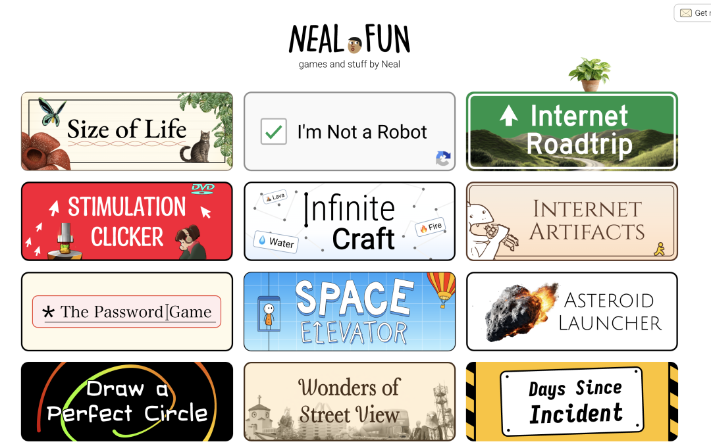
当然还有技术元老：
05
点击下方卡片，关注逛逛 GitHub
这个公众号历史发布过很多有趣的开源项目，如果你懒得翻文章一个个找，你直接关注微信公众号：逛逛 GitHub ，后台对话聊天就行了：